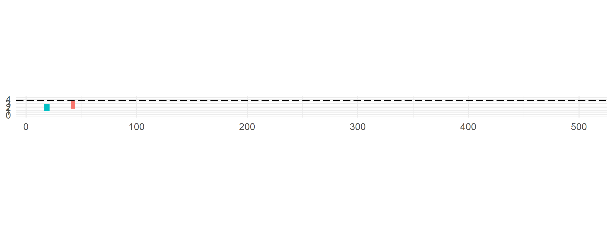
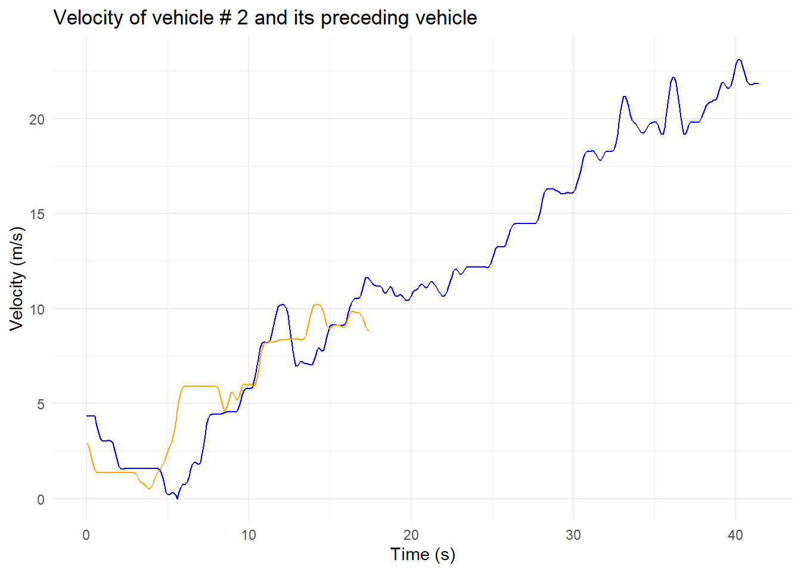

Create this little animation of a car following another car:

This post shows code in R. You can see the same post written in Pythonhere.
In the previous post, we partitioned the Interstate 80 (I80) vehicle trajectories data by time and then saved it on disk:
We now make use of the parquet file in the period=first directory for learning to transform data. Since this file is part of partitioned data, I saved it as a separate parquet file in a different location as shown below:
You may read the partitioned parquet file also, but R and Python load it slightly differently.
As you can see above, the column names are in good shape i.e., without any spaces. However, it is easier typing lowercase letters than the sentence case. So, we use the clean_names function from the janitor package to make all column names lowercase. If the column names have spaces or periods in them, clean_names would replace them with underscores.
Since vehicle trajectories change over time, it is nice to see these changes over different time periods. However, the gloabl_time column in this dataset contains integers rather than the actual time. So, we create a new column called actual_time by dividing the global_time by 1000 and converting it to a datetime object.
In R, this can be done via lubridate::as_datetime. Note that we specify the time zone to be America/Los_Angeles.
Note that the data is not in the correct order. The vehicle_ids in the first two rows are 3027 and 3214. However, we know that the same vehicle was observed for several seconds. This means that we should see a given vehicle_id repeated over multiple rows consecutively. We therefore sort by vehicle_id and frame_id:
## First: Sort by Vehicle ID and Timedata_R <- data_R |> dplyr::arrange(vehicle_id, frame_id)head(data_R)
When we want to compare several vehicle trajectories, e.g., how their speeds change over time regardless of when they were observed, we’d want a common time scale. The NGSIM documentation describes that vehicles were observed at a resolution of 0.1 seconds. So, we can create atime variable for each vehicle that starts at 0 and ends at (n-1)/10 where n = number of rows for which a vehicle_id is repeated:
Group by vehicle_id so that time is calculated for each vehicle separately.
2
dplyr::n() gives the group size.
3
Don’t forget to ungroup.
How to create variables for the preceding vehicle?
We’d often need velocity, acceleration, and other variables for the preceding vehicle (vehicle in front of the subject vehicle). These variables can be useful in car-following modeling.
In this dataset, preceding vehicle variables do not exist as separate columns. The only relevant column is preceding which is the identifier of the preceding vehicle. But the data also contains the subject vehicle identifier vehicle_id, along with these variables:
local_y: longitudinal position of the front end of the subject vehicle (feet)
local_x: lateral position of the front end of the subject vehicle (feet)
v_length and v_width are the length and width of the subject vehicle (feet)
v_class is the class of the subject vehicle, i.e., 1 = motorcycle, 2 = car, and 3 = heavy vehicle (bus/truck)
v_vel and v_acc are the velocity (ft/s) and acceleration (ft/s/s) of the subject vehicle
Our goal now is to create new columns of the above variables for the preceding vehicle. To this end, we look for the value of preceding in the vehicle_id column at a given value of frame_id (identifier of time frame) and then grab the value of variable e.g., v_vel at that frame_id:
match function matches the values of preceding to vehicle_id and provide the positions of these matches. Then we use the <VAR>[] syntax to grab the value of a variable (where <VAR> means the variable of interest e.g., v_vel).
A NA value indicates missing value. In this dataset, NA indicates that the value is missing because there was no preceding vehicle observed. For vehicle_id 1 we can see this is true because the preceding value is 0.
How to remove undesired columns?
There are several variables in this dataset that we don’t need as they are completely devoid of any value. So we remove them:
As discussed before, variables in this dataset have imperial units (feet, ft/s, etc.). You may want to transform the values of these variables to metric units. The conversion factor is 0.3048. Here, we utilize the across function to take all the desired columns and apply the conversion factor along with rounding to 2 decimal places:
Moreover, we know that there are variables that should be treated as categorical (qualitative) rather than numbers or strings. For instance, lane_id has values 1-7 and we know that these are identifiers for lanes. Similarly, the class of a vehicle is encoded as 1, 2, and 3 but we know that these numbers do not have any quantitaive information, rather they are categories.
In R, categorical data is encoded as factor data type. So, we use the as.factor function to convert numbers/strings to factor data type:
Cool! We are almost done with transforming our dataset. It is time to do some visualization. The last transformation we learn is to filter the data to keep only one vehicle:
And now we use ggplot2 to create a plot of velocity over time. Subject vehicle in blue and preceding vehicle in orange.
library(ggplot2)ggplot(data = data_R_veh) +geom_path(mapping =aes(x = time, y = v_vel), color ="blue") +geom_path(mapping =aes(x = time, y = preceding_vel), color ="orange") +labs(x ="Time (s)", y ="Velocity (m/s)",title ="Velocity of vehicle # 2 and its preceding vehicle") +theme_minimal()

As you see, the lead vehicle speed is not seen after about 17 seconds. This is because the lead vehicle changed lanes. This can also be seen in this animation: